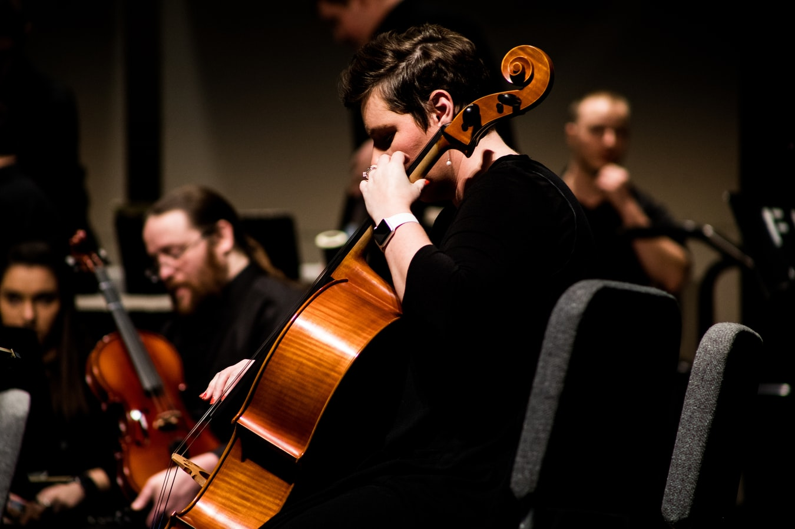
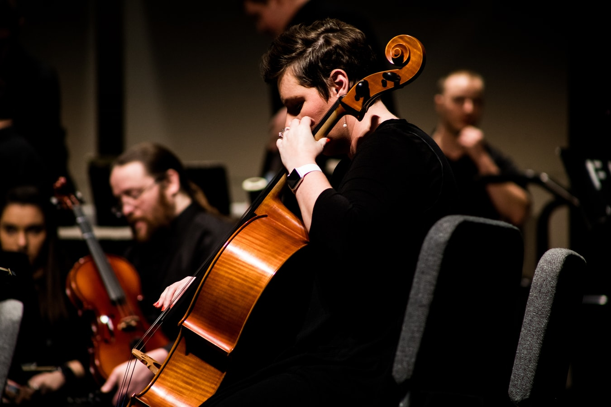

Learn about Switzerland
Culture
Three of Europe's major languages are official in Switzerland. Swiss culture is characterised by diversity, which is reflected in a wide range of traditional customs. A region may be in some ways strongly culturally connected to the neighbouring country that shares its language, the country itself being rooted in western European culture. The linguistically isolated Romansh culture in Graubünden in eastern Switzerland constitutes an exception, it survives only in the upper valleys of the Rhine and the Inn and strives to maintain its rare linguistic tradition.
Switzerland is home to many notable contributors to literature, art, architecture, music and sciences. In addition the country attracted a number of creative persons during time of unrest or war in Europe. Some 1000 museums are distributed through the country; the number has more than tripled since 1950. Among the most important cultural performances held annually are the Paléo Festival, Lucerne Festival, the Montreux Jazz Festival, the Locarno International Film Festival and the Art Basel.


 
